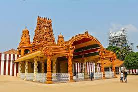
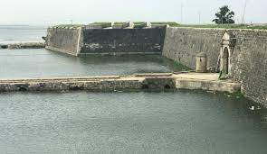
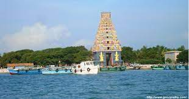
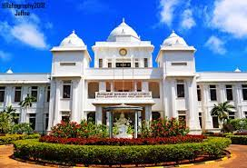

NALLUR TEMPLE
Pilgrims from all parts of the world visit Nallur Temple. The prime feature of this Nallur Temple is the golden arch and the extended Gopuram. People visit here mainly to explore this Gopuram. The premise of this temple was built during the eighteenth century. It was in the year 1620 when the Portuguese destroyed the old construction of this building which was constructed during the regime of Tamil Kings. This temple is now considered as the primary place to hold any type of religious festival.
JAFFNA FORT
Among the top tourist places to visit in Jaffna Sri Lanka, Jaffna Fort is considered as one of the major ones. This fort was established in the year 1618 by the people of Portuguese Origin during the Portuguese invasion in Jaffna. This fort is positioned near the city of Karaiyur. This fort is also famous as Fortress of Our Lady of Miracles of Jaffna. During the year 1658, this fort was conquered by the Dutch invaders and it was again in the year 1795 when this fort was again taken back by the British.
NAINATHEEVU
This tourist place is famous for boat services. You can surely enjoy the boat ride and visit the island. This island is located at a distance of 2 to 3 hours from the city Jaffna. The amount of time you need to visit depends on the availability of boats to reach there. The main temple here was built by a wealthy foreign trader after receiving the blessings from the Goddess Amba Devi. Unfortunately, this temple was destroyed by the Portuguese but it was rebuilt during the 18th century. It was the year 1933 when the actual Gopuram was added to it.
JAFFNA LIBRARY
Jaffna Library is considered as one of the most significant historical and important places to visit in Jaffna. This library was opened in the year 1959. It was established by Alfred Duraiappah who was Mayor of Jaffna at that time. The construction of this library was similar to the Indo-Saracenic style. A tragedy happened with this library and it was burnt during the civil war in Jaffna in the year 1981. At this time this library was considered as the biggest library in Asia. It possessed almost 97000 books and manuscript.
Discover destinations, find outdoor adventures, follow the journeys of our travel writers around the world, and be inspired.